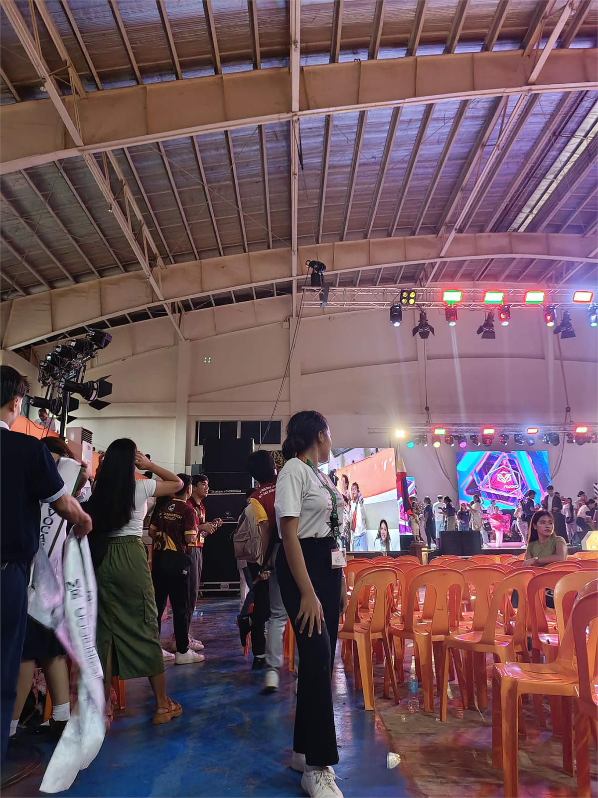

01
The Beginning
First Year
The beginning was filled with adjustments, unfamiliar subjects, new classmates, and a lot of questions.
I was still trying to understand what college was going to be like and whether I could actually keep up.
